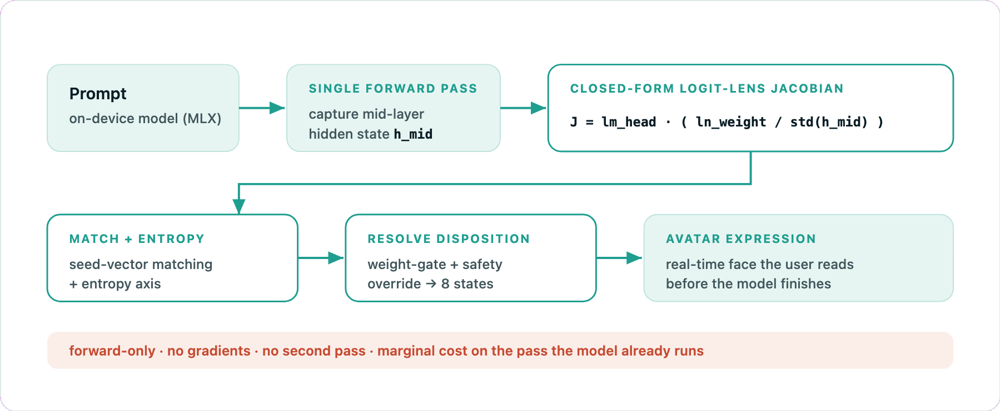
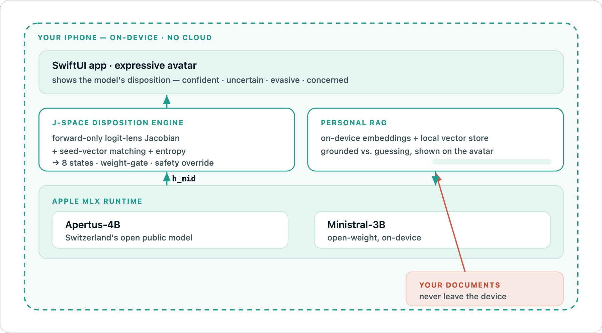
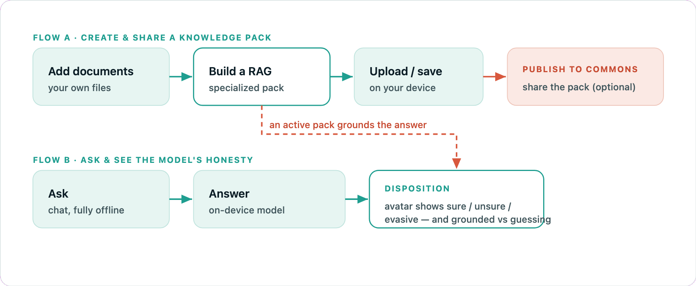

Technical brief · Prototype Fund CH 2026
Architecture & Method
Canis reads a language model's inner disposition — confidence, uncertainty, evasiveness, concern — from its own hidden state, and shows it as an expressive avatar, in real time and entirely on-device. This brief covers the pipeline, the on-device architecture, the user flows, and the method in detail — with references to the interpretability work it builds on.
01The pipeline at a glance
One forward pass, no gradients, no second pass — a marginal cost layered on the computation the model already runs, which is what makes it feasible live on a phone.

Fig 1 — The J-Space read: prompt → single forward pass → closed-form logit-lens Jacobian → seed-vector match + entropy → resolved disposition → avatar.
What the diagram means
A few terms, in plain language. The hidden state h_mid ("mid") is the model's internal work-in-progress — the vector of activations at a middle layer, after it has read the prompt but before it commits to an output. The head weight (lm_head, the unembedding) is the model's final linear layer: the very matrix it uses to turn a hidden vector into a score for every word in its vocabulary. And a Jacobian is simply a table of sensitivities — how much each output changes when you nudge each input. Here it answers one question: as the hidden state shifts, which words does the model lean toward? That lean is what we call its disposition. Canis computes a cheap, closed-form version of this Jacobian directly from the head weight and the hidden state's own scale — so it can be read in a single step, on the phone, without ever running the model twice.
02On-device architecture
Everything — the model, the disposition engine, and personal RAG — runs inside the phone. No cloud round-trips; documents never leave the device.

Fig 2 — The stack: SwiftUI app + avatar, the J-Space disposition engine, personal RAG, and open-weight models (Apertus-4B, Ministral-3B) on Apple MLX.
Why these two models
Running a model on the phone is a tight budget, and the choice is dominated by three constraints. Size & memory — the weights must fit in the iPhone's unified memory alongside the OS and the app; at 4-bit quantization a 3–4B-parameter model lands around 2–3 GB, whereas 7B+ models crowd out memory and risk being killed by the system. Thermal — sustained generation heats a passively-cooled SoC, so a smaller model that holds a high tokens-per-second is what keeps the avatar feeling live without thermal throttling. Openness & sovereignty — both ship open weights, so everything stays on-device with no cloud fallback. We chose Apertus-4B (Switzerland's public model) as the primary backend for its openness and Swiss provenance, and Ministral-3B as an even lighter second option that also lets us compare disposition behaviour across model families. The principle: the smallest models that are good enough to be useful — digital sufficiency, made in hardware.
03How you use it
Two independent flows: build and (optionally) share a knowledge pack, and ask questions while the avatar reads the model's honesty. An active pack grounds the answer.

Fig 3 — Flow A: add documents → build a RAG → save → publish. Flow B: ask → answer → disposition (grounded vs. guessing).
Two ways in
Out of the box (Flow B) is the simplest loop: you ask, the model answers on-device, and you observe its disposition — is it confident, unsure, evasive? That alone is an honest read on a general-purpose model. Creation (Flow A) is for when you are the expert. You bring a domain you know — a manual, a course, a body of facts — and build a personal knowledge pack (a RAG). Now the disposition does double duty: as you ask, you can verify the answers against your own ground truth, and the avatar shows when a reply is grounded in your material versus guessed. The expert stays in the loop, and the model's honesty becomes checkable against a domain you can actually judge.
04The method, in detail
How Canis turns a transformer's mid-layer activations into a legible, honest disposition signal — cheaply enough to run live on Apple Silicon.
4.1 · Reading disposition from the hidden state
At generation time, a transformer produces a mid-layer residual-stream hidden state hℓ. The logit lens (nostalgebraist, 2020) observed that projecting an intermediate hidden state through the model's own unembedding already yields an interpretable next-token distribution — the model is, in effect, "leaning toward" certain outputs well before the final layer. Canis reads that lean: the local relationship between the mid-layer state and the vocabulary logits is a Jacobian,
Rather than compute this with autodiff (too heavy for a phone), Canis uses a closed-form logit-lens approximation: the final RMSNorm followed by the unembedding is (locally) linear in h, so the Jacobian is well-approximated by the unembedding matrix rescaled by the norm gain and the state's RMS:
4.2 · The forward-only adaptation
Because the approximation needs no gradients, the disposition is read with a single matrix multiplication against the hidden state the model already computed — not a second forward pass. This is the key de-risking insight for on-device operation: the cost is marginal relative to generation itself.
4.3 · Seed-vector matching
Keyword matching on the output text is brittle. Instead, Canis pre-projects a set of anchor seed phrases for each disposition into J-space and stores their mean as a concept vector vd. The live readout is scored by cosine similarity against each disposition:
4.4 · The entropy axis
J-space projections can be noisy on a given turn. As an independent, robust gauge, Canis also reads the next-token softmax Shannon entropy — high entropy is genuine hesitation regardless of the concept read:
4.5 · Resolution & the safety axis
The final disposition is resolved by combining the seed-vector scores with the entropy reading under a weight-gate (a minimum winning margin), so a weak or ambiguous signal defaults to a neutral idle rather than over-claiming. Three dispositions — concern, reluctant, mischief — form a safety axis: when their signal is present it is allowed to override, so hedging, refusal, and evasive phrasing surface visibly. Canis deliberately detects evasion at the lexical/representational level (Tier 1) and does not claim to detect intentional scheming (Tier 2) — a boundary we keep explicit to preserve scientific credibility.
Eight dispositions are classified: idle, confident, uncertain, curious, concern, reluctant, warm, mischief. Each maps to the avatar's ears, brows, gaze, mouth, and micro-gestures — the read a person makes at a glance.
05References & lineage
Canis builds on an established line of work reading a transformer's latent predictions from its intermediate states.
- The logit lens. nostalgebraist (2020), "interpreting GPT: the logit lens."
- Eliciting Latent Predictions with the Tuned Lens. Belrose, Furman, Smith, Halawi, Ostrovsky, McKinney, Biderman, Steinhardt (2023).
- Mechanistic interpretability & the disposition lens. Anthropic interpretability research.
- Personal RAG vs. LoRA — our finding. Flotilla open model & evaluation on Hugging Face.
- Apertus. Switzerland's open, public large language model.
- Apple MLX. Array framework for machine learning on Apple silicon.